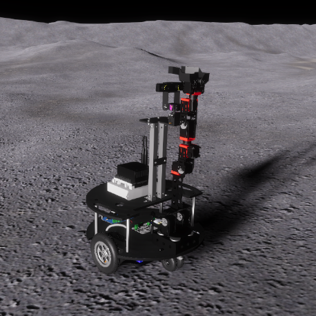

I am a 2nd year PhD student in Electrical Engineering at the University of Colorado Boulder under the supervision of Professor Tamara Silbergleit Lehman.
Currently, my research focus is on hardware security metrics for computer systems.
I obtained my BSc in Electrical and Computer Engineering at the University of Colorado Boulder in 2022.
During my undergraduate degree, I researched VR and AR applications for lunar robotics under the guidance of Professor Jack O. Burns.
You can reach me at: phaedra.curlin {at} colorado.edu

NASA will return to the Moon to conduct lunar and space science as well as prepare for human exploration missions. NASA's current rover failure response methods use hardware duplicates which are costly and time consuming to assemble. To address this, we developed and assessed a VR digital rover twin in a simulated environment to support lunar robotic missions missions like FARSIDE in case of assembly failures.
Work supported by NASA-funded NESS and NASA Solar System Exploration Research Virtual Institute.
I have collected here some tips and tricks on what I have learned to use as future reference for myself and others.
Last modified: